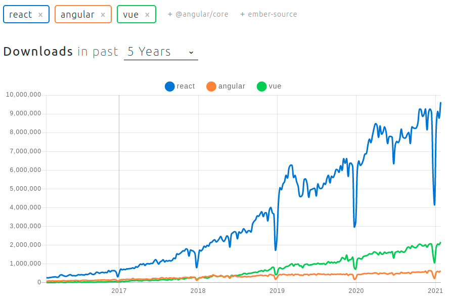

IDOM - It's React, but in Python
IDOM is a new declarative Python package for building highly interactive and composable user interfaces.

IDOM takes inspiration from React, and wherever possible, attempts to achieve parity with the features it copies more directly. Nowhere is this more evident than the version of React's often lauded "Hooks" that IDOM implements in Python.
At a glance, the similarities between IDOM and React are rather striking. Below is a
React component which defines a simple Slideshow displaying an image that updates when
a user clicks on it. Immediately following that is the same view implemented in Python
using IDOM:
import React, { useState } from react;
function Slideshow() {
const [index, setIndex] = useState(0);
return (
<img
src={ `https://picsum.photos/400?image=${index}` }
onClick={ () => setIndex(index + 1) }
style={ {cursor: "pointer"} }
/>
)
}
import idom
@idom.component
def Slideshow():
index, set_index = idom.hooks.use_state(0)
return idom.html.img(
{
"src": f"https://picsum.photos/400?image={index}",
"onClick": lambda event: set_index(index + 1),
"style": {"cursor": "pointer"},
}
)
idom.run(Slideshow)
Why Do We Need IDOM?
Over the past 5 years front-end developers seem to have arrived at the conclusion that declarative programming is usually better than imperative. Put more simply, mutable state in programs can quickly lead to unsustainable complexity. This trend is largely evidenced by the rise of Javascript frameworks like Vue and React which describe the logic of computations without explicitly stating their control flow.

So what does this have to do with Python and IDOM? Well, because browsers are the de facto "operating system of the internet", even back-end languages like Python have had to figure out clever ways to integrate with them. While standard REST APIs are well suited to applications built using HTML templates, modern browser users expect a higher degree of interactivity than this alone can achieve.
A variety of Python packages have since been created to help solve this problem:
- IPyWidgets - Adds interactive widgets to Jupyter Notebooks
- Plotly Dash - Allows data scientists to produces enterprise-ready analytic apps
- Streamlit - Turns simple Python scripts into interactive dashboards
- Bokeh - An interactive visualization library for modern web browsers
However they each have drawbacks that can make them difficult to use.
-
Restrictive ecosystems - UI components developed for one framework cannot be easily ported to any of the others because their APIs are either too complex, undocumented, or are structurally inaccesible.
-
Imperative paradigm - projects like IPyWidgets and Bokeh have not embraced the same declarative design principles pioneered by front-end developers.
-
Limited layouts - At their initial inception, the developers of these libraries were driven by the visualization needs of data scientists so the ability to create complex UI layouts may not have been a primary engineering goal.
A future article will address specific comparisons to each of the projects mentioned above, but for now we'll just focus on how IDOM and its solutions to the problems above.
Ecosystem Independence
IDOM has a flexible set of core abstractions that allow it to easily interface with its peers. At the time of writing both Jupyter and Dash are already supported while Streamlit, Bokeh, and Iooxa (another scientific collaboration tool), are in the works:
- idom-jupyter (try it now with Binder)
- idom-dash
By providing well defined interfaces and straighforward protocols, IDOM makes it easy to swap out any part of the stack with an alternate implementation if you need to. For example, if you need to use a different web server for your application, IDOM already has 3 options to choose from or use as blueprints to create your own.
You can even target your usage of IDOM in your production-grade applications with IDOM's Javascript React client library. Just install it in your front-end app and connect a back-end websocket that's serving up IDOM models. Instead of creating your whole application with IDOM, you can use it exactly where you need it. Further, the ability to leverage custom or existing javascript components in IDOM means that you can progressively develop React components for your particular use cases.
IDOM's own documentation acts as a prime example for this targeted usage - most of the page is static HTML, but embedded in it are interactive examples that feature live views being served from a web socket:

Declarative Components
IDOM, by adopting the hook design pattern from React, inherits many of its aesthetic and functional characteristics. For those unfamiliar with hooks, user interfaces are composed of basic HTML elements which are constructed and returned by special functions called "components". Then, through the magic of hooks, those functions can be made to have state. Consider the component below which returns two buttons and some text that reacts when either is pressed:
import idom
@idom.component
def OnOff():
state, set_state = idom.hooks.use_state(False)
return idom.html.div(
idom.html.button({"onClick": lambda event: set_state(True), "On"),
idom.html.button({"onClick": lambda event: set_state(False), "Off"),
idom.html.p("The button is " + ("on" if state else "off")),
)
The first time a view of the component above is rendered, the OnOff function is called
where the initial state is False. The function then returns a series of to return a
series of HTML elements with callbacks. Machinery behind the scenes then realizes that
declaration and thusly displays two buttons with the text "The button is off". When a
user clicks the now visible "On" button, its callback is triggered, the state is set
to True, the OnOff function is called, and the machinery again goes to work. This
time though, the text displayed will read "The button is on".
This behavior of defining outcomes without stating the means by which to achieve them is what makes components in IDOM and React "declarative". For comparison, a hypothetical, and a more imperative approach to defining the same interface might look similar to the following:
layout = Layout()
def on_off():
state_text = html.p(children="The button is off")
def set_on(event):
state_text.update(children="The button is on")
def set_off(event):
state_text.update(children="The button is off")
return html.div(
html.button(on_click=set_on, children="On"),
html.button(on_click=set_off, children="Off"),
state_text,
)
layout.add_element(on_off())
In this imperative incarnation, we must explicitely state how the count_button updates
count_text via its on_click callback. We should also note that state is mutated by
ammending its 'count', a side effect which can be avoided with hooks.
It's important to note that neither declarative nor imperative design principle are inherently better in all circumstances. However, it is often the case that asserting the way a view should look is easier than describing how it should come to look that way.
Flexible Layouts
Constructing complex layouts is also made easier when done declaratively because the
elements, state, and logic that comprise them are not entangled. As in the OnOff
component shown above, code responsible for managing business logic and manipulating
state can be clearly detached from the code responsible for structuring the elements of
the layout. The great advantage of this approach is that these sections of code can be
easily factored out into separate functions if either the logic or the structure becomes
too complex:
@idom.component
def OnOff():
return on_off_buttons(*use_on_off_state())
def use_on_off_state():
"""manage logic and state"""
state, set_state = idom.hooks.use_state(False)
def set_on():
set_state(True)
def set_off()
set_state(False)
return state, set_on, set_off
def on_off_buttons(state, set_on, set_off):
"""define element structure"""
return idom.html.div(
idom.html.button({"onClick": lambda event: set_on(), "On"),
idom.html.button({"onClick": lambda event: set_off(), "Off"),
idom.html.p("The button is " + ("on" if state else "off")),
)
While the refactoring above is overkill in such a simple case, attempting something similar with the ealier imperative example wouldn't be as straighforward because callbacks responsible for defining business logic must hold a reference to the elements they intend to update. The effect is that the description of the layout in code is often muddled by semantic limitations of the business logic that make it difficult to maintain as the code develops and grows old.
Conclusion
Building highly interactive web applications as a Python developer has historically been a great challenge. However IDOM changes that. Knowing just basic HTML, CSS, and Python, you can make everything from slideshows to dashboards and use it wherever you need it, whether that's in a Jupyter Notebook or an existing web application.
To learn more check it out: